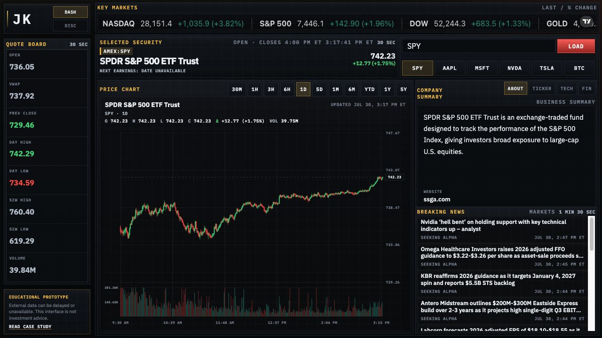

01

Interactive systemSoftware · Data interface · Individual build
Market intelligence interface
A browser-based research console that turns fragmented public market feeds into a compact quote board, custom price chart, company context panel, headlines, and a separate discovery scanner.
- Custom SVG candlestick chart
- Multi-source fallbacks and caching
- Public dashboard and discovery views